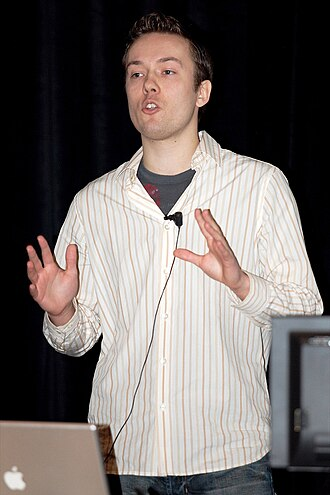

Введение

Давид Хейнемейер Ханссон — датский программист, автор и создатель популярного веб-фреймворка Ruby on Rails, а также соучредитель компании Basecamp.
Он родился в Копенгагене (Дания). Окончил Копенгагенскую бизнес-школу. Помимо программирования, активно занимается автогонками — участвует в гонках на выносливость, включая знаменитый марафон «24 часа Ле-Мана».
В 2005 году получил премию O'Reilly Open Source Award за вклад в развитие открытого программного обеспечения.
«Я не хочу быть программистом. Я хочу быть человеком, который что-то делает».
— Давид Хейнемейер Ханссон